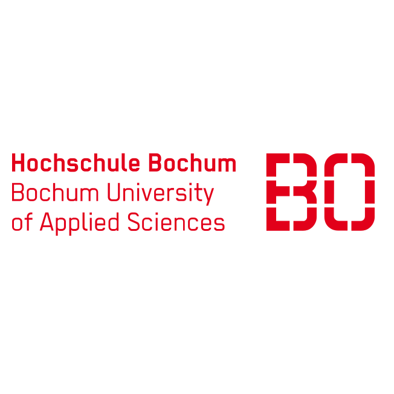

We create Open Educational Resources for Spatial Data Infrastructures that are modular, published under a permissive CC-BY-SA 4.0 license and can be used both in classroom settings and in self-learning environments. The materials are available from our GitHub repository and (soon) via the ORCA.nrw platform.
Core Team
- Hon.-Prof. Dr. Albert Remke, Institute for Geoinformatics, University of Münster
- Jun.-Prof. Dr. Andreas Rienow, Department of Geography, Ruhr-University Bochum
- Prof. Dr. Carsten Keßler, Department of Geodesy, Bochum University of Applied Sciences
- Dr. Henryk Hodam, Department of Geography, Ruhr-University Bochum
- Fabian Przybylak, M.Sc., Department of Geodesy, Bochum University of Applied Sciences